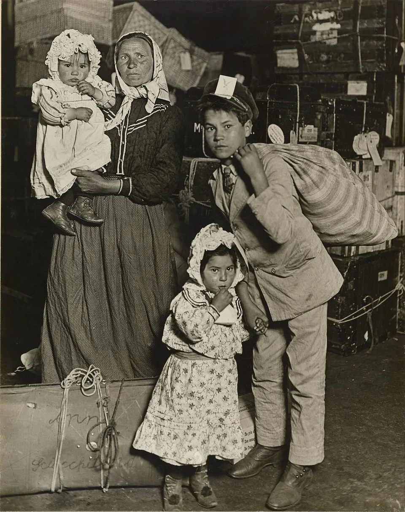

Cidadania, módulo 1, sessão 09
Muitas vozes, uma escola
Versão para imprimir: o material, os 14 exercícios e o papel do fim. Fazes tudo sozinho, só com uma caneta.
Parte 1, ver antes de concluir
Abre: Muitas vozes, uma escola
Caso inventado.
Nos intervalos ouvem-se português, crioulo cabo-verdiano, romeno e nepalês. A direção propõe uma regra: nos intervalos, só português, «para todos se entenderem». A proposta está afixada no átrio, com espaço para comentários. Os que lá estão são todos de alunos que só falam português. A Mariana, que fala nepalês com a irmã no intervalo, ainda não escreveu nada.
Quando uma regra parece servir todos, de quem é a voz que falta?
Decide
A regra «só português nos intervalos» deve avançar?
☐ Sim ☐ Não ☐ Depende
Escreve, numa linha, a razão que pesa mais para ti.
Exercício 1: A pergunta do peixe mais velho
Em 2005, David Foster Wallace contou: um peixe mais velho pergunta a dois novos como está a água; um deles pergunta o que é a água. O que mostra isto?
- Que os peixes novos não ouviram bem a pergunta do mais velho.
- Que o mais habitual é, muitas vezes, o mais difícil de ver.
- Que os peixes velhos sabem mais do que os peixes novos.
Resposta: ______
Exercício 2: O mesmo preço para todos
Caso inventado: a visita de estudo custa 25 euros a cada aluno. Como o preço é igual, pesa o mesmo em cada família.
☐ Verdadeiro ☐ Falso
Olha: Uma família à chegada
Antes de olhar Olha primeiro para as pessoas e para o que trazem; só depois lê a legenda.

Lewis Hine, Immigrant Family in the Baggage Room of Ellis Island, 1905, prova em gelatina e prata. Museum of Fine Arts, Houston. Registo no Wikimedia Commons. Domínio público.

Exercício 3: O que se vê
Só a olhar para a imagem, sem a legenda: o que podes afirmar?
- Esta família não sabe falar inglês.
- A família está cansada da longa viagem.
- O rapaz leva um grande saco ao ombro.
Resposta: ______
Exercício 4: Imagem e legenda
Só pela fotografia, sem a legenda, sabes que esta família acabava de chegar de outro país.
☐ Verdadeiro ☐ Falso
Lê: O que uma regra não pode tirar
Antes de ler Primeiro a Constituição, depois a Convenção: o que diz cada uma sobre a língua?
13.º, n.º 2«Ninguém pode ser privilegiado, beneficiado, prejudicado […] em razão de […] língua, território de origem, religião […]»
Artigo 30.º«[…] nenhuma criança indígena ou que pertença a uma dessas minorias poderá ser privada do direito de […] ter a sua própria vida cultural, professar e praticar a sua própria religião ou utilizar a sua própria língua.»
30.º, início«Nos Estados em que existam minorias étnicas, religiosas ou linguísticas ou pessoas de origem indígena, […]»
41.º, n.º 3«Ninguém pode ser perguntado por qualquer autoridade acerca das suas convicções ou prática religiosa, salvo para recolha de dados estatísticos não individualmente identificáveis, nem ser prejudicado por se recusar a responder.»
Convenção, 30.º; Constituição, 41.º
Exercício 5: O que a regra tira
No artigo 30.º, sublinha as duas palavras que dizem o que a regra do intervalo tira à Mariana.
ter a sua própria vida cultural, professar e praticar a sua própria religião ou utilizar a sua própria língua.
Exercício 6: A regra e o artigo 13.º
A regra do intervalo não pergunta de onde vem cada aluno. Por isso, fica fora do artigo 13.º, n.º 2.
☐ Verdadeiro ☐ Falso
Exercício 7: Perguntar pela religião
«Ninguém pode ser perguntado por qualquer autoridade acerca das suas convicções ou prática religiosa, salvo para recolha de dados estatísticos não individualmente identificáveis, nem ser prejudicado por se recusar a responder.»
Caso inventado: um inquérito da câmara pede a religião de cada pessoa, com o nome e a morada, «para estatística». O artigo 41.º, n.º 3, permite-o?
- Não: com nome e morada, cada resposta identifica alguém.
- Sim: sendo para estatística, a pergunta é permitida.
- Sim: basta que quem não responder não fique prejudicado.
Resposta: ______
Exercício 8: Um elogio pela origem
Caso inventado: para uma visita a uma empresa, a escola escolhe só alunos vindos de fora, «porque são mais trabalhadores». É um elogio. Pelo artigo 13.º, n.º 2, há problema?
- Não: o artigo só proíbe prejudicar, e ninguém perde.
- Não: é um elogio a esses alunos, não uma ofensa.
- Sim: ninguém pode ser beneficiado em razão da origem.
Resposta: ______
Conceito: Facto, dado, opinião, estereótipo
O caso
«Quem vem de fora não quer aprender português.» Soa a facto. É?
Mais perto
| Tipo de frase | Como se confere |
|---|---|
| facto | vendo ou ouvindo |
| dado | na fonte do número |
| opinião | não se confere: discute-se |
| estereótipo | não se confere: generaliza sem provas |
O nome
Estereótipo
Uma ideia feita, igual para todos os de uma origem, língua ou religião.
O que não é
Mesmo um elogio: «quem vem de fora é trabalhador» também é um estereótipo.
Exercício 9: Um momento ou um traço
Caso inventado: à porta, a Leonor guarda um envelope ao ver os colegas e pede para falar depois. O Rui: «Nunca queres participar.» O que é cada frase?
- Ela prefere falar sem os colegas por perto.
- «Nunca queres participar.»
- A Leonor guarda o envelope e pede para falar depois.
- Um momento tornado traço de carácter
- Uma hipótese, que se pode pôr à prova
- O que a cena mostra
Liga: 1 ___ 2 ___ 3 ___
Exercício 10: A natação obrigatória
Caso real (Tribunal Europeu dos Direitos Humanos, 2017): sem dispensa da natação mista, duas alunas de família muçulmana podiam nadar de burkini. O Tribunal não viu violação. Porquê?
- Pesou aprender em conjunto, e a escola adaptou a aula sem dispensar ninguém.
- Uma regra que é igual para todos não se pode contestar num tribunal.
- A liberdade de religião não protege o que os pais ensinam aos filhos.
Resposta: ______
Parte 2, pesar e escrever
Volta ao caso: A razão da direção
Parte 2
Caso inventado.
A diretora explica: na semana passada, um aluno queixou-se de que dois colegas se riam dele em romeno; e ela acha que uma língua comum junta a escola. A Mariana escreve no átrio: a irmã chegou há dois meses e ainda não percebe português. Por baixo, alguém acrescenta: «Quem fala outra língua no intervalo está a esconder alguma coisa.»
Exercício 11: O que a queixa prova
Pela queixa do aluno, já se sabe que só falar português no intervalo acaba com o gozo.
☐ Verdadeiro ☐ Falso
Em turma
A regra «só português nos intervalos» deve avançar?
☐ Sim ☐ Não ☐ Depende
Compara com a tua escolha do início. O que pesa mais? ☐ A queixa do aluno ☐ A irmã da Mariana ☐ O artigo 30.º
Exercício 12: Facto, princípio, opinião ou estereótipo
Liga cada frase ao que ela é numa justificação.
- A irmã da Mariana chegou há dois meses.
- «Quem fala outra língua no intervalo está a esconder alguma coisa.»
- «[…] utilizar a sua própria língua.»
- A diretora acha que uma língua comum junta a escola.
- Um estereótipo
- Um facto do caso
- Um princípio escrito num texto
- A opinião de uma das partes
Liga: 1 ___ 2 ___ 3 ___ 4 ___
Exercício 13: A justificação por ordem
Põe a justificação por ordem: cada passo tem de se apoiar no que vem antes.
- Falta saber se só falar português no intervalo evitaria o gozo.
- Com a regra, a Mariana deixa de poder falar com a irmã no intervalo.
- A irmã da Mariana chegou há dois meses e ainda não percebe português.
- A Convenção diz que nenhuma criança de uma minoria pode ser privada do direito de utilizar a sua própria língua.
Ordem: ___ → ___ → ___ → ___
Exercício 14: A conclusão que vai longe de mais
Só uma destas conclusões vai além do que o caso mostra. Encontra-a.
- A diretora propõe a regra a pensar na queixa de um aluno.
- Falar nepalês no intervalo atrasa o português da irmã.
- A irmã da Mariana chegou à escola há pouco tempo.
Resposta: ______
Agora, em papel
Num papel pequeno, sozinho, sem telemóvel.
Quando uma regra parece servir todos, de quem é a voz que falta?
CódigoData
- A tua conclusão: a regra deve avançar, mudar ou cair?
- Uma prova: um facto do caso e uma expressão exata, entre aspas, com o artigo.
- Uma dúvida que ainda tens.
O que conta
- A conclusão responde à pergunta sem ir além das provas.
- A prova junta um facto a uma expressão exata, com o artigo.
- A dúvida, respondida, podia mudar a conclusão.
Um exemplo, sobre outro caso
Caso inventado: o clube de teatro só aceita inscrições pelo telemóvel.
- Conclusão: deve haver também inscrição em papel.
- Prova: dois alunos não têm telemóvel, por falta de dinheiro; ninguém pode ser «prejudicado» em razão da «situação económica» (artigo 13.º, n.º 2).
- Dúvida: quantos ficam de fora?